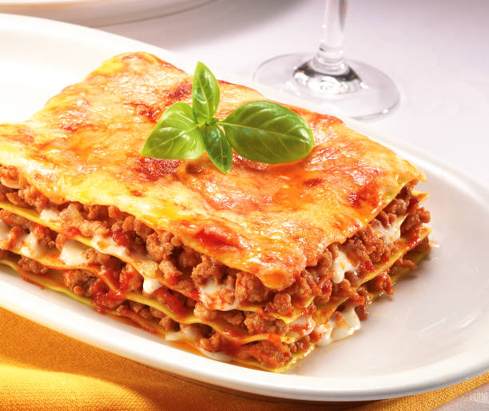

Lasagna

Description
Lasagna is a beloved Italian comfort dish made by layering sheets of pasta with rich meat sauce, creamy béchamel, and melted cheese. Its warm, hearty flavors make it perfect for family dinners and special occasions.
This classic version features a meat-based ragu and layers of mozzarella and parmesan for the ultimate cheesy experience.
Ingredients
- 9 lasagna noodles
- 1 lb ground beef
- 1 jar marinara sauce (24 oz)
- 1 cup ricotta cheese
- 2 cups shredded mozzarella cheese
- 1/2 cup grated parmesan cheese
- 1 egg
- 2 tbsp olive oil
- Salt and pepper
- Fresh basil (optional)
Steps
- Boil the lasagna noodles until al dente, then drain and set aside.
- In a skillet, heat olive oil and cook ground beef until browned.
- Add marinara sauce to the beef and simmer for 10 minutes.
- In a bowl, mix ricotta cheese, egg, salt, and pepper.
- Preheat the oven to 375°F (190°C).
- In a baking dish, spread a thin layer of meat sauce.
- Add a layer of noodles, then ricotta mixture, meat sauce, and mozzarella.
- Repeat layers, finishing with meat sauce and mozzarella on top.
- Sprinkle with parmesan and bake for 30–35 minutes.
- Let rest for 10 minutes before serving. Garnish with basil if desired.
Home